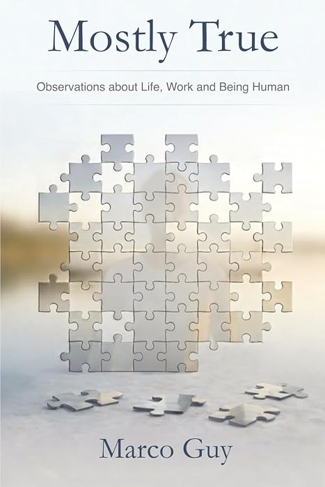

Mostly True
Observations about Life, Work and Being Human

Mostly True is a collection of life lessons gathered the old-fashioned way — by living through them and paying attention.
Across short, thoughtful, and often humorous chapters, Guy — writing as Marco Guy — reflects on work, family, growth, mistakes, success, stress, perspective, and the quiet art of becoming a better human being. These are not theories from a mountaintop; they are observations drawn from the middle of real life.
Not absolute truths. Not final answers. From experience to memory to keystrokes, it is… Mostly True.
Where to Get It
Available in paperback and Kindle. Published by Molto Tempo, April 2026 · 465 pages.
What Readers Are Saying
“There are some real useful gems in this book.”
Bulk & Speaking Orders
Interested in bulk copies for your team, or in pairing the book with a keynote? Reach out directly.